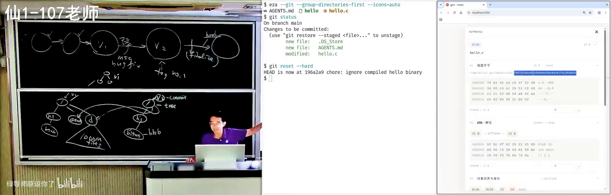
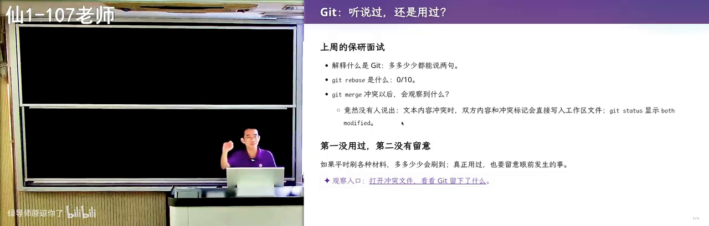

# 03 软件仓库管理
本讲主线是软件仓库管理：一个项目如何从「一堆文件」变成可追溯、可协作、可审计的版本库。阅读时长估算约 18 分钟（估算），不是实测；视频约 100 分钟。结构上先弄清仓库的对象与历史模型，再谈分支与合并、提交纪律，最后落到项目管理本质与 AI 时代怎么学。文中时间锚点均来自原视频，术语首次出现时给出简短解释。
一、为什么还要学仓库管理
开课前讲师先回顾：前几次课讲了把 AI 融进生活流程——把不顺心的事挡掉，只需告诉它你真实的意图，还可以把过程蒸馏成 skills，让流程更平顺。与此同时模型本身在快速进展。讲师试用了新一代 GPT：编程提升有限，有经验的软件工程师仍靠「品位」指导 AI 做得更好；模型完成任务更快、更省 token（他特意测量过），但写出来的代码越来越紧凑，人越来越难 review。他猜测这与思维链变短有关：从 GPT-5 到 5.6 再到 6，代码越写越紧，人越来越不想看。以前我们会要求「写出符合人类工程规范的代码」，现在团队甚至开始不看 AI 代码——只要结果对就随它去。
另一个惊喜是空间感知。讲师一直认为 OpenAI 对 AGI 的路径是先学会数学：数学是人类世界里最难的语言，却有全球认同的推理系统——定理证明对不对，全世界都会同意。这与软件工程里 intent → specification → code 之间层层放大的 gap 正好相反：数学有全球共识，是极好的 grounding（把推理锚到可核验的事实上）。生活里的选择也可以看成投票与蕴含（做了 A 就会做 B），可对齐到离散数学的命题逻辑。
空间想象则像鲁班锁、骰子展开图一类智力题：只要从简单任务开始强化学习，模型也能学会。讲师的研究组在 GPT 空间感知还很差时，已用对话生成符合规范的 3D 打印模型；新一代模型则把他们做小半年的光栅玩具（左右看是不同图案的光栅纸）「one shot」直接做出来，研究组一时不知如何应对。有人用它控制机械臂做抓取、叠衣服——注意这还是语言模型，一帧一帧问「下面要干什么」，尚未解锁提示词工程，已接近当时的最好水平。结论是：模型一定会进步，也许课上到某次就可以说「这门课不用上了」，大家去做产品。
但今天仍需要学软件工程——AI 解锁的是你的执行力，而不是你对系统的理解。
他用汽车作比：一百多年前汽车开十二公里就出故障，每个司机都必须懂工作原理，否则半路抛锚只能自己修；今天在车库说一句「帮我开到某地」，自动驾驶就出发了，人已经不需要知道动力如何传到机械装置——但最终它仍传到一个与百年前相似的机械装置上，只是中间过程你都不必知道。人工智能比汽车更强——它替代的是智力——但现阶段学好基础概念，才能更好地解锁 AI 的创造力。以后该怎么学，讲师说他暂时也没有答案，欢迎探讨；这是他的个人观点。理解正确的概念，还能帮你从别的领域借鉴，做出更好的东西。
二、项目是什么，为什么需要仓库
从建目录开始
开始做软件时，第一件事通常是建一个目录，给它起个名字（比如「我的最酷的 game」），再往里放代码、文档、配置与测试。目录里这堆文件共同构成可交付物，最后变成产品。讲师概括：软件是人类世界的需求在信息世界里的投影——目录就是这个投影的落地形态。你有一个 hello.c，能编译出可执行文件，就已经在做软件了；至于是否符合现代 best practice，是下一步的事。教室里没有软件时，连升降桌都动不了（桌腿旁的高度显示是 106 厘米）——软件无处不在。
怎么知道目录里该放什么？往往是不经意间看过老师打开的工程项目，或同学发来 GitHub 链接——网页上那些文件让你形成直觉。一个本地能跑的 demo 不等于世界可访问：有个笑话是「GPT 太牛了，我做了多少 killer 产品」，它们全是 http://localhost:5137。若不在 intent 里写明「要被全世界人看到」，模型会把你当成开发者，先起本地开发服务器调试，ready 了才送远端。这些知识在计算机专业课里会反复出现，最终变成你项目里的文件与可交付物。从 IDE 一键编译，到大二用 GCC 把 hello.c 编成 hello 二进制，你就在做软件工程的项目了。标准定义上，软件是代码、文档等一切与软件相关的东西的集合；讲师更愿意说：它是需求的投影，今天落在一个目录里。
为什么需要「回到上一版」
早期许多人用拷贝目录、U 盘、邮件附件来「保存版本」。讲师举自己第一个博士生的例子：2012 年入学，大一为了在机房与宿舍之间搬代码，把作业存进 U 盘（那时宿舍屏幕不便宜，机房是标准答案；如今二手小屏幕几百块就能在宿舍获得很好体验）；大二 U 盘损坏，作业和启蒙代码全部丢失。上学时交作业是打压缩包发邮件，现在是网页上传——都是管理项目的方式。真正的需求很清楚：改错了要能回去看上一版。新手误操作非常正常，「回到上一个版本看我原来怎么写的」就是版本管理（记录文件随时间的变化，并可回溯、比较、恢复的机制）的起点。
今天这门课的标准答案是 git。它不只保存某一时刻的目录状态，还能保留、比较与恢复历史版本——这是软件工程里很重要的特性，后面会详细展开。有了它，分发作业用 clone，更新远端即可，不必再对每人发压缩包；配合脚本自动打包上传课程网站，甚至接近现代 CI/CD 流程。对讲师自己，有了 agent 之后更夸张：投诉信都交给 codex，做完连浏览器一起关掉，过程完全托管。GitHub 这类平台让分发代码前所未有地方便，甚至成了 AI 时代依赖管理的底层设施（各种包配置都托管在上面）。
怎么在真实仓库里学细节
命令（init/add/提交/push）可以交给 agent，讲师更强调在使用中主动观察。不同项目的文件、README 长短和信息密度各不相同；他用城市路牌作比：在香港，路口前会提示下一步方向；回到南京地铁站，找出口时有时得环顾或走到远处看地图。看过更好的范例，才知道 README 或 UI 怎样用更少的信息让人找到所需内容；有 AI 后还可以追问，好的项目为什么没有「AI slop」感。
他称另一种学习方法为 virtually implement（虚拟实现）：读论文或看方案之前，先在脑中自己把问题做一遍，再与作者方案比较。若对方更精巧，就追问原因并把它变成自己的知识；偶尔自己的方案更好，也会带来正反馈。这种办法也适用于高等数学、计算机系统基础等课程。
讲师认为，课外信息密度已远高于课堂：成熟仓库可能凝结了工程师十几年的实践，经历过重构才成为今天的样子。学习者不应只按任务清单完成作业；他把这种「老师让做什么就只做什么」比作只执行指令的 agent，建议多点进项目看看文件、文档和细节。先想自己会怎样解决，再比较现成方案；讲师还判断，求职市场对工程细节的要求会不断提高。面试中能否解释 git merge 冲突（多人改同一处且 Git 无法自动合并、需人工裁决的状态）后会看到什么，也是工程细节差异的例子。
三、Git 如何保存历史
从「作业 V1、V2」发明版本库
若只复制目录命名为作业 V1/V2/V3，虽直观，却难以比较与合并。更干净的想法是：只维护一个作业目录，用命令列出历史版本、把当前版本切到另一版、回到过去某版。这已经是一个简化版的版本管理工具。再往后，与室友同步、两人改同一文件时，自然要发明合并与分歧处理——这正是 git 的生长路径。讲师强调：你可以从「我知道什么、我想要什么」推出下一个概念该长什么样；这本身就是数学式推理——每一句话都和前一句有逻辑关联。OpenAI 先把数学训好再扩别的能力，也是这种「从共识出发」的思路。
快照模型，而不是补丁链
快照（某一时刻项目全部文件状态的完整记录）是课堂解释 Git 的核心模型。讲师用逐次保存补丁的方式作对比：在这种模型里，回到较早状态需要沿变化逐步还原；快照模型则把「回到某一版」作为直接操作来理解。这里是课堂上的概念对比，不代表所有 SVN 与 Git 版本的实际存储实现都如此。讲师还回顾 Linux 的维护方式：1991–2002 年通过邮件列表发送补丁，后来使用过其他工具；课堂画面列出 2002 年 BitKeeper、2005 年 Git。Git 由 Linux 作者 Linus Torvalds 在 2005 年创建，讲师称其模型更简单、概念更干净。
三类对象
底层上，git 是一个持久化的数据结构，持久化的是目录树：
- blob（Git 中保存文件字节内容的对象）：文件内容本身；
- tree（Git 中表示目录结构、指向子项的对象）：目录与文件名、权限、指向子项的指针；
- commit（把当前改动保存为一条带说明的历史快照）object（提交对象）：钉住某一时刻目录树，并记录说明与父提交的对象。
改一个文件时不必复制整个项目：只需新建该文件的 blob，并复制「到根的路径」上的 tree，未改动的子树用指针指回旧对象。例如根下有 a.txt、b.txt 和子目录 d，改 b.txt 时只新建 b 的 blob 与到根的路径上的 tree，a 与 d 都用指针指回旧对象。目录本身也不会深到离谱（没有人在意千层深目录），所以哪怕仓库有百万文件，一次提交的增量也很小。.git 目录里那些带哈希的 objects，就是这棵不断向后生长的树。大学生从第一性原理出发，完全有可能设计出这样的结构。
课堂用可视化工具对着真实仓库演示：blob 可以是空的 hello.c，也可以是可执行文件；tree 里记录权限位（如 644、755）与文件名；很小的文件压缩反而浪费：存盘约 31 字节，解出的内容只有 23 字节（另有 52 字节解出 43 字节的类似情况）——这不要紧，对象模型干净比压缩率更重要。还可以持续监听目录变化，用动画展示 commit 后对象树如何长出新版本：删除一个文件，右侧树立刻少一个节点；创建分支则多出 refs 下的指针文件。与 Learn Git Branching 那类模拟模型的教具不同，这是直接读真实 .git 里的字节，逐步解析给人看。

git 对象树可视化字幕对照 · 在 B 站打开 (01:12:14)
四、分支与合并
分支并不是整份仓库的拷贝，而是 refs 文件里的指针，指向某个提交对象。HEAD（指向当前分支的指针，决定工作区停在哪个版本）再指向分支，是「指针的指针」。合并后的历史里，一个提交可以有两个 parent——分叉再汇合，是 git 的常态。失败的尝试可以安全扔掉，成功的分支再合并进来，多条主线并行而不互相干扰。
把决策信息放在问题现场
冲突发生时，文本里会有等号、尖括号、incoming 等标记，两边修改同屏出现；IDE 还会给出接受某侧的按钮。git 不会替你决定「这行到底是二还是三」——解决冲突是开发者的责任。举例：文件原来是 1111，一人把第二行改成 2，另一人改成 3，git 不能假装没看见直接躺下，而要把两侧和 base 一起摆出来。
冲突路径在 index 中还会有 base、ours、theirs 三个阶段，便于人工裁决；解决后再形成新的提交，merge commit 可有两个 parent。讲师用「把决策所需信息放在问题现场」解释冲突标记的作用，也建议遇到冲突时先看清两侧内容，再决定是否交给 agent 处理。

冲突标记与两侧修改同屏字幕对照 · 在 B 站打开 (00:28:10)
五、提交纪律
为什么是小步 commit
commit（把当前改动保存为一条带说明的历史快照）应在每次有意义改动后及时做：修一个 bug、加一个功能、调一版文档、改一处脚本。message 要描述你改了什么——读提交历史就能看出项目如何演进：修了多少 bug、加了什么需求、经历过什么重构。若一万个提交都是 “I added some cool stuff”，message 这个特性等于不存在，不如只留 V1→V2。git 存的是快照，但项目本质上还是 V1 经一次修改变到 V2；message 就是那次修改的说明。
基础动作本身很短：git init 得到空仓库（多出隐藏的 .git 目录），git add hello.c 暂存，git status 看工作区，git commit 打出带消息的快照。真正的冰山是「什么时候 add、什么时候 commit、message 怎么写」——长期实践沉淀出的 best practice。不要把 git 用成「作业 V1/V2/V3」；那是拷贝目录的习惯，不是 git 推荐的用法。
为什么要及时提交？复杂项目里改得越多，错得越可能多。小项目一次两三千行或许没事；项目变复杂后，一个上万行的大提交可能一次引入多个 bug，后面修一百个都说「是 V2 的问题」，甚至修不过来、也不知道修好没有。小步提交则冤有头债有主：修复与引入可以配对，历史成为可审计的资产。做完小提交立即 push，还能在本机损坏前留下互联网备份。
完整、自洽、能构建
提交应当是完整自洽的快照：每次提交的代码应该能够通过构建和测试。编译不过的代码进库，等于让仓库处于坏状态——人很容易想「就改一个字，先提交吧」，但工程习惯要求提交前让代码可构建。消息格式可参考 conventional commits（用类型前缀规范提交说明的约定）：课堂展示的例子用类型前缀、冒号与空格，如 fix off by one in header length check；讲师还转述模型给出的建议，包括用祈使句、现在时描述变更，并让标题和正文有清楚层次。具体约定可随项目而异，重点是消息可读、风格一致。讲师也指出，模型生成的提交说明仍可能中英混杂或随意发挥，工程细节需要人留意。
空提交（无文件变更）偶尔可用于标记发布或触发 CI：比如为 V0.1 freeze 做一个 finalize 提交，把 bugfix 提交和发布标记分开。不宜滥用，不能制造大量空提交。git 甚至允许你在无任何代码变更时再打一个提交；agent 知道这个技巧，但 best practice 仍建议少用。更稳的自动化是 hook（在特定事件发生时自动执行检查的钩子）：在提交前做规则检查，不通过就不让交。hook 也用在 agent 上：完成需要输入时叮一声提醒。严肃项目里可以在 pre-commit 上挂几十条 checking rules；连规则命名用全大写还是小写这种两难，都值得多问一句——每个细节都问清，你就比别人多一层长进。
什么不该进版本库
研究组里常见的「高血压」现场：把 dist、日志、个人编辑器配置、甚至仍有效的 API 密钥提交进库；Mac 同学还会不知不觉带上 .DS_Store（Finder 留下的隐藏索引文件）。编译产物（如 hello 可执行文件）通常不应提交：不同环境编出的二进制可能带日期、哈希或本机指纹，产生难以合并的二进制冲突；图片等二进制内容也不便像文本那样合并。用 .gitignore（声明哪些文件不纳入版本管理的清单文件）排除它们；git add . 虽合法，却常把点开头的隐藏临时文件一并带上。
规则并非绝对：package-lock.json、生成的 header 这类生成物提交后反而利于别人在缺工具链时复现编译。也没有绝对的「所有 generated file 都不该提交」。git 本身不阻止你提交这些文件。课堂演示中的 agent 检查了空提交、编译产物和提交信息，并建议将历史整理成两个有意义、单一职责的提交。导师还举例说，新同学常把 dist、日志、个人配置或 API 密钥带入仓库；AI 可以先做检查和解释，减少导师逐项纠正的压力。
六、把历史变成工具
- git blame：指出每一行是哪次提交、谁改的，用来定位「谁引入了这行」。
- git bisect（在提交历史中二分查找定位引入问题的版本）：把历史看成「前缀都正常、从某点起都失败」的序列，像二分查找找第一个 1，快速锁定引入 bug 的提交。前提是手里有一个能检出 bug 的测试或检查手段。
前提是历史本身干净：小步、可构建、消息可读。否则 blame 全是噪声，bisect 也无从下手。小步 commit 使修复可与引入提交配对，形成审计链——这是历史能当工具用的前提。agent 时代仍可要求「小步提交、可审计」，维护效率更高，也更省 token：不相关的文件可以不用再读。
还可以把 GitHub 之类的平台能力接上：issue、评论并不在 git 对象里持久化，用 gh 这类命令行工具可以拉取、认领、关闭 issue；在 agent 里设一个 goal，要求小步提交、可审计提交、线性历史，长任务也能转起来。提交信息里写 fix #3 之类还能自动关联 issue。agent 时代这些命令甚至成为「古法手艺」——你不必背命令，但必须有概念：知道 git 能干什么，才能让 agent 按 best practice 去干。真正的风险是你分不清「我自己能干」还是「脱了 agent 就干不了」；对初学者，多一次亲手观察冲突、亲手 blame，就多一分可迁移的能力。
七、项目管理的本质
讲师判断：项目应组织成用 atomic change（一次只做一件完整小事的变更，便于审计与回滚）推进的快照序列。这句话是今天更要记住的总纲；仓库里的命令与对象，都是从这句话推出来的。
原因是：项目管理的本质是人类没有办法处理一团混沌。需求多、代码多、改动堆在一波，必然改乱——古法做大作业改着改着就四处冲突，这个部分和那个部分互相踩。自然的对策是把需求分解成可理解、可审计的小任务，一小步一小步推进。这样出问题可以 bisect、可以 blame；协作冲突也容易解决——只冲突的小提交单独裁决，不冲突的部分顺利合并。管理很多快照还有一个好处：可以随时开新分支做尝试，失败就安全扔掉，成功就合并进来，多条主线并行而不互相干扰。更严肃的项目还要求 linear history：历史像线一样可追溯，对 cherry-pick 与 blame 更友好，在模型能力无限之前，这对人与 agent 维护都更省。
架构先行
据其实践，讲师会在架构设计阶段先用单线程、智力比较高的模型把接口讨论清楚，再开多个 agent 实现。接口若设计不好，后面是无穷迭代。他把组件接口做成 pure function（纯函数：相同输入必得相同输出、不改外部状态），全局状态收敛到很小的注册表（例如光标位置等共享状态只有十几行），并要求 agent 只看接口、禁止读库实现——上下文只要几万 token 就能做出可视化 playground。架构定好后，开几个终端并行，哪里不满意再修；agent 与人协作的成本都会下降。这套做法本身也是「小步、可审计」在 AI 开发中的延伸。
例子：给小学生教 Python 的极简 playground——整数与字符串互转、hello * 10、汉诺塔递归调试（可前进后退的动画）、方块下落的可视化，都可以 web code 出来；讲师把控架构与视觉，代码质量交给 AI。两天碎片时间就能完成一个可用的课件生成流程，甚至便宜的国产模型也能出课件。真正值钱的是你愿意花时间学细节——求职市场上「把细节做好」的 bar 会不断提高。
八、结尾留问
课堂最后留下一个未回答的问题：「如果 agent 快了一千倍，我们还怎样管理版本控制？」讲师说下一节课再讨论；本讲没有给出答案。
本讲对应视频约 100 分钟；正文为可独立阅读的忠实书稿（保留关键实体、定义、因果、案例与限制；去掉口语与重复），阅读时长估算。完整逐句对照见 transcript.corrected.txt。